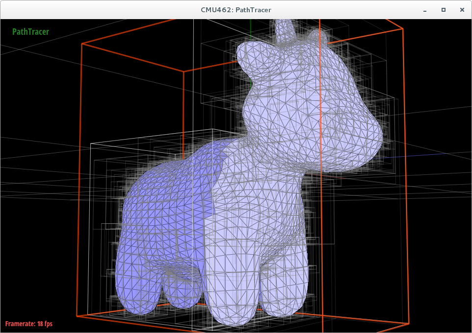
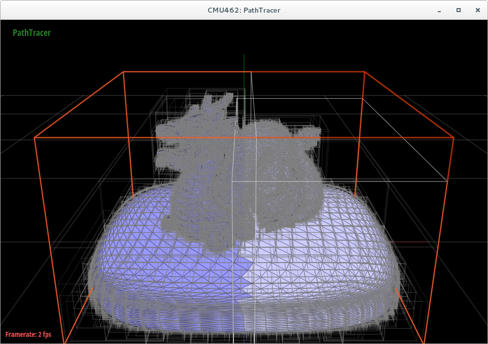

Improving performance of BVH construction
In our final project, we extend the previous physically-based renderer assignment, and construct a fully parallel BVH to improve performance of BVH construction.
1. We first implement the algorithm(tThinking Parallel, Part III: Tree Construction on the GPU) to generate BVH based on Morton code. We assign Morton code to each primitive and construct the hierarchy according to differs between the Morton codes. This method is implemented on CPU as a benchmark.
2. We then construct the binary radix tree(BRT) according to the algorithm(Maximizing Parallelism in the Construction of BVHs, Octrees, and k-d Trees, and Fast Parallel Construction of High Quality Bounding Volume Hierachies) and implement the fully parallel hierarchy generation.This method is implemented on GPU.Based on the BRT we constructed, we use a bottom-up traversal method mentioned in the paper to construct the BVHs on GPU. And finally copy the structure to CPU for further use.
Results
Construct BVH on CPU and GPU with cow.dea
cow.dae
GPU
[PathTracer] Collecting primitives... Done! (0.0008 sec)[PathTracer] Building BVH... Done! (0.0053 sec)
CPU
[PathTracer] Collecting primitives... Done! (0.0004 sec)[PathTracer] Building BVH... Done! (0.1020 sec)
Construct BVH on CPU and GPU with dragon.dae

dragon.dae
GPU
[PathTracer] Collecting primitives... Done! (0.0162 sec)[PathTracer] Building BVH... Done! (0.0855 sec)
CPU
[PathTracer] Collecting primitives... Done! (0.0171 sec)[PathTracer] Building BVH... Done! (5.2194 sec)